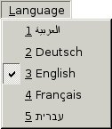

Dynamic Language Switching
For most applications, detecting the user's preferred language in main() and loading the appropriate .qm files there is perfectly satisfactory. But there are some situations where users might need the ability to switch language dynamically. An application that is used continuously by different people in shifts may need to change language without having to be restarted. For example, applications used by call center operators, by simultaneous translators, and by computerized cash register operators often require this capability.
Making an application able to switch language dynamically requires a little more work than loading a single translation at startup, but it is not difficult. Here's what must be done:
Provide a means by which the user can switch language. For every widget or dialog, set all of its translatable strings in a separate function (often called retranslateUi()) and call this function when the language changes.
Let's review the relevant parts of a "call center" application's source code. The application provides a Language menu to allow the user to set the language at run-time. The default language is English.

Since we don't know which language the user will want to use when the application is started, we no longer load translations in the main() function. Instead, we will load them dynamically when they are needed, so all the code that we need to handle translations must go in the main window and dialog classes.
Let's have a look at the application's QMainWindow subclass.
MainWindow::MainWindow()
{
journalView = new JournalView;
setCentralWidget(journalView);
qApp->installTranslator(&appTranslator);
qApp->installTranslator(&qtTranslator);
qmPath = qApp->applicationDirPath() + "/translations";
createActions();
createMenus();
retranslateUi();
}
In the constructor, we set the central widget to be a JournalView, a QTableWidget subclass. Then we set up a few private member variables related to translation:
The appTranslator variable is a QTRanslator object used for storing the current application's translation. The qttranslator variable is a QTRanslator object used for storing Qt's translation. The qmPath variable is a QString that specifies the path of the directory that contains the application's translation files.
At the end, we call the createActions() and createMenus() private functions to create the menu system, and we call retranslateUi(), also a private function, to set the user-visible strings for the first time.
void MainWindow::createActions()
{
newAction = new QAction(this);
connect(newAction, SIGNAL(triggered()), this, SLOT(newFile()));
...
aboutQtAction = new QAction(this);
connect(aboutQtAction, SIGNAL(triggered()), qApp, SLOT(aboutQt()));
}
The createActions() function creates the QAction objects as usual, but without setting any of the texts or shortcut keys. These will be done in retranslate-Ui().
void MainWindow::createMenus()
{
fileMenu = new QMenu(this);
fileMenu->addAction(newAction);
fileMenu->addAction(openAction);
fileMenu->addAction(saveAction);
fileMenu->addAction(exitAction);
...
createLanguageMenu();
helpMenu = new QMenu(this);
helpMenu->addAction(aboutAction);
helpMenu->addAction(aboutQtAction);
menuBar()->addMenu(fileMenu);
menuBar()->addMenu(editMenu);
menuBar()->addMenu(reportsMenu);
menuBar()->addMenu(languageMenu);
menuBar()->addMenu(helpMenu);
}
The createMenus() function creates menus, but does not give them any titles. Again, this will be done in retranslateUi().
In the middle of the function, we call createLanguageMenu() to fill the Language menu with the list of supported languages. We will review its source code in a moment. First, let's look at retranslateUi():
void MainWindow::retranslateUi()
{
newAction->setText(tr("&New"));
newAction->setShortcut(tr("Ctrl+N"));
newAction->setStatusTip(tr("Create a new journal"));
...
aboutQtAction->setText(tr("About &Qt"));
aboutQtAction->setStatusTip(tr("Show the Qt library's About box"));
fileMenu->setTitle(tr("&File"));
editMenu->setTitle(tr("&Edit"));
reportsMenu->setTitle(tr("&Reports"));
languageMenu->setTitle(tr("&Language"));
helpMenu->setTitle(tr("&Help"));
setWindowTitle(tr("Call Center"));
}
The retranslateUi() function is where all the TR() calls for the MainWindow class occur. It is called at the end of the MainWindow constructor and also every time a user changes the application's language using the Language menu.
We set each QAction's text, shortcut key, and status tip. We also set each QMenu's title, as well as the window title.
The createMenus() function presented earlier called createLanguageMenu() to populate the Language menu with a list of languages:
void MainWindow::createLanguageMenu()
{
languageMenu = new QMenu(this);
languageActionGroup = new QActionGroup(this);
connect(languageActionGroup, SIGNAL(triggered(QAction *)),
this, SLOT(switchLanguage(QAction *)));
QDir dir(qmPath);
QStringList fileNames =
dir.entryList(QStringList("callcenter_*.qm"));
for (int i = 0; i < fileNames.size(); ++i) {
QString locale = fileNames[i];
locale.remove(0, locale.indexOf('_') + 1);
locale.truncate(locale.lastIndexOf('.'));
QTranslator translator;
translator.load(fileNames[i], qmPath);
QString language = translator.translate("MainWindow",
"English");
QAction *action = new QAction(tr("&%1 %2")
.arg(i + 1).arg(language), this);
action->setCheckable(true);
action->setData(locale);
languageMenu->addAction(action);
languageActionGroup->addAction(action);
if (language == "English")
action->setChecked(true);
}
}
Instead of hard-coding the languages supported by the application, we create one menu entry for each .qm file located in the application's translations directory. For simplicity, we assume that English also has a .qm file. An alternative would have been to call clear() on the Qtranslator objects when the user chooses English.
One particular difficulty is to present a nice name for the language provided by each .qm file. Just showing "en" for "English" or "de" for "Deutsch", based on the name of the .qm file, looks crude and will confuse some users. The solution used in createLanguageMenu() is to check the translation of the string "English" in the "MainWindow" context. That string should be translated to "Deutsch" in a German translation, to "Français" in a French translation, and to " " in a Japanese translation.
We create one checkable QAction for each language and store the locale name in the action's "data" item. We add them to a QActionGroup object to ensure that only one Language menu item is checked at a time. When an action from the group is chosen by the user, the QActionGroup emits the triggered(QAction *) signal, which is connected to switchLanguage().
void MainWindow::switchLanguage(QAction *action)
{
QString locale = action->data().toString();
appTranslator.load("callcenter_" + locale, qmPath);
qtTranslator.load("qt_" + locale, qmPath);
retranslateUi();
}
The switchLanguage() slot is called when the user chooses a language from the Language menu. We load the translation files for the application and for Qt, and we call retranslateUi() to retranslate all the strings for the main window.
On Windows, an alternative to providing a Language menu is to respond to LocaleChange events, a type of event emitted by Qt when it detects a change in the environment's locale. The event type exists on all platforms supported by Qt, but is only actually generated on Windows, when the user changes the system's locale settings (in the Control Panel's Regional and Language Options). To handle LocaleChange events, we can reimplement QWidget::changeEvent() as follows:
void MainWindow::changeEvent(QEvent *event)
{
if (event->type() == QEvent::LocaleChange) {
appTranslator.load("callcenter_"
+ QLocale::system().name(), qmPath);
qtTranslator.load("qt_" + QLocale::system().name(), qmPath);
retranslateUi();
}
QMainWindow::changeEvent(event);
}
If the user switches locale while the application is being run, we attempt to load the correct translation files for the new locale and call retranslateUi() to update the user interface. In all cases, we pass the event on to the base class's changeEvent() function, since the base class may also be interested in LocaleChange or other change events.
We have now finished our review of the MainWindow code. Next we will look at the code for one of the application's widget classes, the JournalView class, to see what changes are needed to make it support dynamic translation.
JournalView::JournalView(QWidget *parent)
: QTableWidget(parent)
{
...
retranslateUi();
}
The JournalView class is a QTableWidget subclass. At the end of the constructor, we call the private function retranslateUi() to set the widget's strings. This is similar to what we did for MainWindow.
void JournalView::changeEvent(QEvent *event)
{
if (event->type() == QEvent::LanguageChange)
retranslateUi();
QTableWidget::changeEvent(event);
}
We also reimplement the changeEvent() function to call retranslateUi() on LanguageChange events. Qt generates a LanguageChange event when the contents of a QTRanslator currently installed on QApplication changes. In our application, this occurs when we call load() on appTranslator or qttranslator, either from MainWindow::switchLanguage() or from MainWindow::changeEvent().
LanguageChange events should not be confused with LocaleChange events. Locale-Change events are generated by the system and tell the application, "Maybe you should load a new translation." LanguageChange events are generated by Qt and tell the application's widgets, "Maybe you should retranslate all your strings."
When we implemented MainWindow, we didn't need to respond to LanguageChange. Instead, we simply called retranslateUi() whenever we called load() on a Qtranslator.
void JournalView::retranslateUi()
{
QStringList labels;
labels << tr("Time") << tr("Priority") << tr("Phone Number")
<< tr("Subject");
setHorizontalHeaderLabels(labels);
}
The retranslateUi() function updates the column headers with newly translated texts, completing the translation-related code of a hand written widget. For widgets and dialogs developed with Qt Designer, the uic tool automatically generates a function similar to our retranslateUi() function that is automatically called in response to LanguageChange events.
|